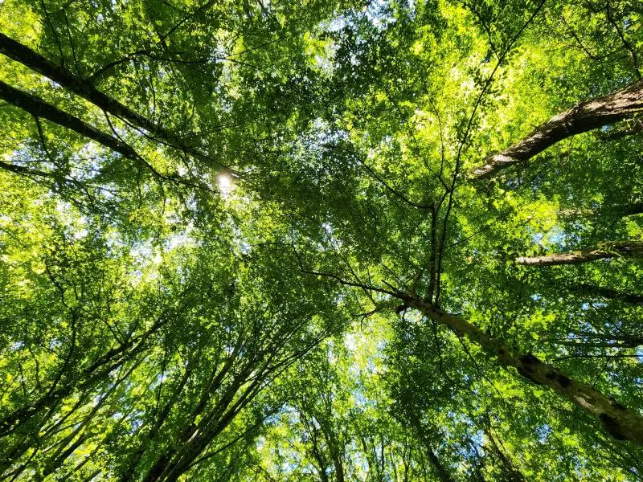
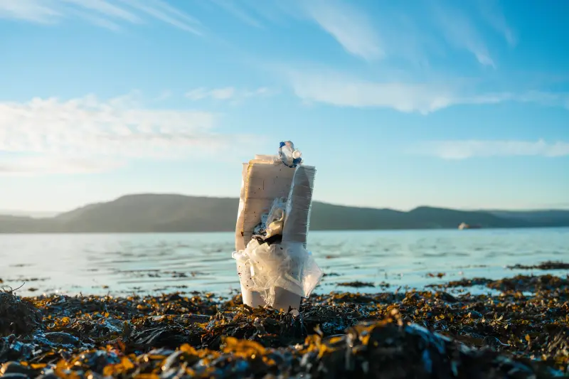
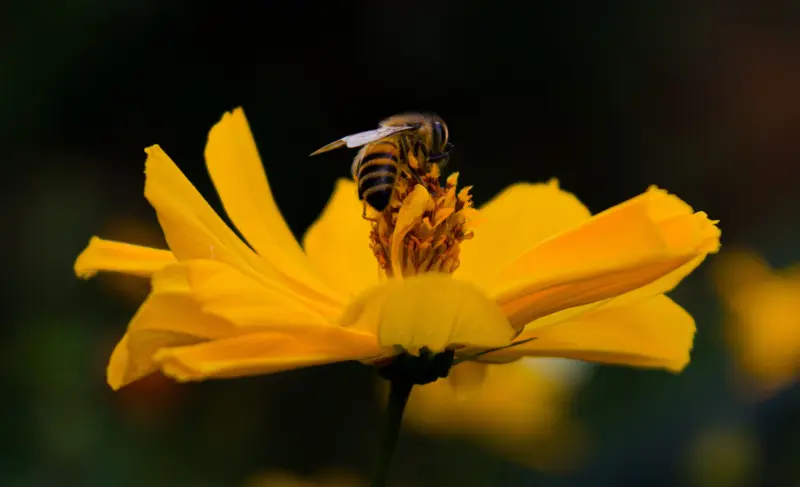
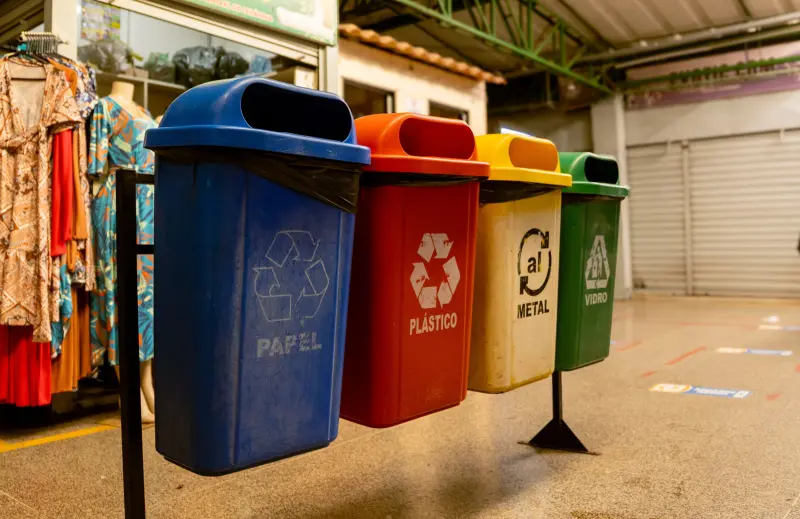
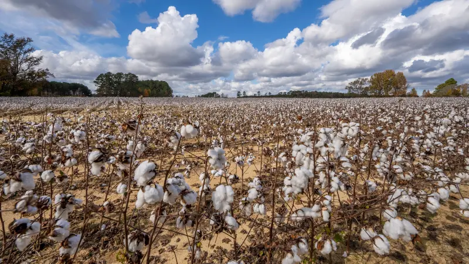
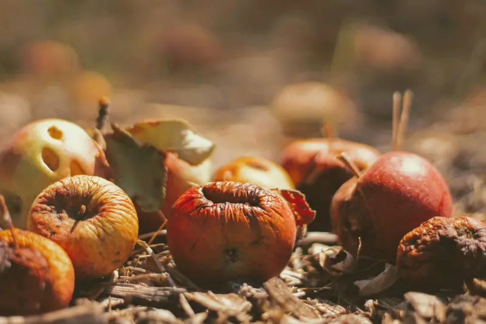
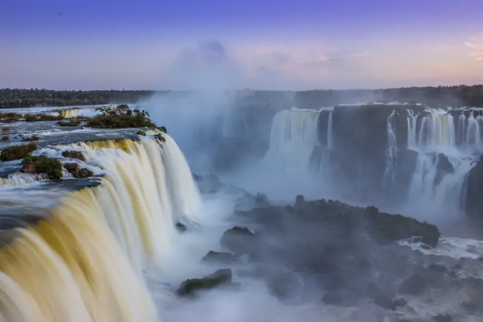

Curiosidades:
Quanto oxigênio uma árvore produz?

uma árvore adulta produz, em média, cerca de 118 quilos de oxigênio por ano. Para você ter uma ideia do que isso significa na prática, essa quantidade é suficiente para manter dois seres humanos respirando tranquilamente durante o mesmo período.
Esse processo acontece através da fotossíntese. A árvore absorve o gás carbônico do ambiente e a água do solo, usa a luz do sol como fonte de energia e, no final, libera o oxigênio limpo no ar. É basicamente um filtro natural funcionando o tempo todo.
O mais curioso é que o foco da árvore não é fabricar o ar para nós. O oxigênio é apenas um "resto" do processo que ela faz para produzir o seu próprio alimento. Nós é que demos a sorte de pegar carona nessa biologia!
Quanto tempo o plástico leva para se decompor?

Pensar na vida útil do plástico é meio bizarro. Aquela garrafa de água que você tomou hoje vai continuar no planeta quando seus tataranetos nascerem! O plástico demora entre 100 e 600 anos para sumir.
E sabe qual é o motivo disso? Ele é feito de petróleo, com moléculas presas por uma "supercola" química ultra-resistente. Como a natureza nunca viu isso antes, as bactérias e fungos não têm as ferramentas (enzimas) para digeri-lo. Eles simplesmente olham para o plástico e desistem.
O pior é que ele não some de verdade. O sol e as ondas só quebram o material em pedacinhos minúsculos: os microplásticos. Eles poluem a água, entram nos peixes e acabam voltando para o nosso próprio prato.
Que tal darmos uma força para o planeta recusando aquele canudinho descartável hoje?
Por que as abelhas são tão importantes?

Você já parou para pensar que cerca de um terço de tudo o que comemos depende diretamente das abelhas? Muito além do mel, esses pequenos insetos são os grandes motores da biodiversidade no nosso planeta.
Ao voar de flor em flor em busca de néctar, as abelhas realizam a polinização — um processo essencial para a reprodução de milhares de espécies vegetais, incluindo a grande maioria das frutas, legumes e grãos que chegam à nossa mesa diária.
Sem elas, a agricultura sofreria um impacto devastador: a oferta de alimentos despencaria e ecossistemas inteiros entrariam em colapso, afetando a sobrevivência de inúmeras outras espécies. Além disso, a vegetação mantida por elas ajuda a preservar os solos e a qualidade do ar. Proteger as abelhas é garantir a saúde da natureza e o futuro da nossa própria alimentação.
O que significa pegada ecológica?
A pegada ecológica é uma métrica ambiental que calcula o impacto das atividades humanas sobre o planeta. Ela mede a quantidade de recursos naturais necessários para sustentar o estilo de vida de uma pessoa, comunidade ou país, considerando fatores como consumo de água, uso de energia, geração de resíduos e emissões de carbono.
O cálculo funciona comparando essa demanda com a biocapacidade da Terra, ou seja, a capacidade que a natureza tem de se regenerar e absorver os resíduos produzidos. Quando o consumo humano supera essa taxa de renovação, gera-se um déficit ecológico, esgotando recursos que não se recompõem no mesmo ritmo.
Esse indicador serve como um termômetro essencial para a sustentabilidade. Mais do que registrar dados, a pegada ecológica evidencia a urgência de reavaliar padrões de consumo e guiar escolhas em direção ao equilíbrio do ecossistema.
Nem todo plástico é reciclável.

Nem todo plástico é reciclável — e essa é uma das confusões mais comuns quando o assunto é reciclagem. Existem sete tipos principais de plástico, identificados por aqueles numerozinhos dentro do triângulo nas embalagens. Só que nem todos têm mercado ou tecnologia viável para reciclagem no Brasil. PET (tipo 1) e PEAD (tipo 2), por exemplo, são bem aceitos e reciclados com frequência. Já plásticos como PVC, poliestireno (isopor) e alguns multicamadas — usados em salgadinhos e embalagens de café, por exemplo — quase nunca são reciclados, mesmo que o símbolo esteja lá.
Isso acontece porque reciclar exige que o material seja separável, limpo e tenha demanda industrial. Sem isso, ele vai parar em aterros ou incineração, mesmo que a pessoa tenha separado certinho. Por isso, reduzir o consumo de plástico continua sendo mais eficaz do que confiar cegamente na reciclagem.
Quanto de água é gasto para produzir uma camiseta?

Você já parou pra pensar em quanta água está "escondida" dentro de uma camiseta comum? Em média, são necessários cerca de 2.700 litros de água para produzir uma única peça de algodão — o suficiente para uma pessoa beber por quase três anos. Boa parte desse gasto acontece no cultivo do algodão, planta que exige muita irrigação, além da água usada em processos como tingimento e lavagem do tecido.
Esse conceito é chamado de "pegada hídrica": a quantidade total de água consumida, direta ou indiretamente, para fabricar um produto. E o problema vai além do volume — em muitas regiões produtoras, a água usada é retirada de áreas já com escassez hídrica, agravando conflitos locais pelo recurso.
Por isso, escolhas como comprar menos, optar por tecidos alternativos ou prestigiar marcas com produção mais consciente fazem diferença real no consumo de água do planeta.
O que é compostagem?

A compostagem é um processo biológico natural de reciclagem que transforma resíduos orgânicos em adubo de alta qualidade. Por meio da ação de microrganismos como fungos e bactérias, restos de alimentos, cascas de frutas, folhas secas e podas de jardim são decompostos e convertidos em um composto rico em nutrientes para o solo.
Essa prática desempenha um papel fundamental na gestão ambiental urbana. Ao evitar que grandes volumes de lixo orgânico sejam enviados para aterros sanitários e lixões, a compostagem reduz drasticamente a emissão de metano — um dos gases mais potentes do efeito estufa — e minimiza a contaminação do solo por chorume.
O produto final, chamado de húmus, melhora a retenção de água e a estrutura da terra, dispensando o uso de fertilizantes químicos. Assim, a compostagem fecha o ciclo da matéria orgânica de forma sustentável.
O Brasil possui uma das maiores reservas de água doce do mundo.

O Brasil abriga cerca de 12% de toda a água doce disponível no planeta, o que o coloca entre os países com as maiores reservas do mundo. Grande parte desse volume está concentrada no Aquífero Guarani, um dos maiores reservatórios subterrâneos do planeta, e na Bacia Amazônica, que sozinha responde por boa parte da água doce superficial do país.
Mas esse privilégio não é distribuído de forma igual dentro do território. Enquanto a região Norte concentra a maior parte da água disponível, é justamente onde menos pessoas vivem. Já regiões mais populosas, como o Nordeste e partes do Sudeste, enfrentam períodos recorrentes de escassez e estresse hídrico.
Ou seja, ter uma reserva gigantesca não significa automaticamente segurança hídrica para todos. Gestão, distribuição e uso consciente da água continuam sendo desafios reais, mesmo em um país tão "rico" nesse recurso.